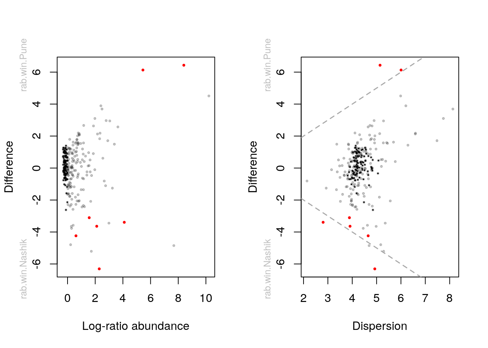
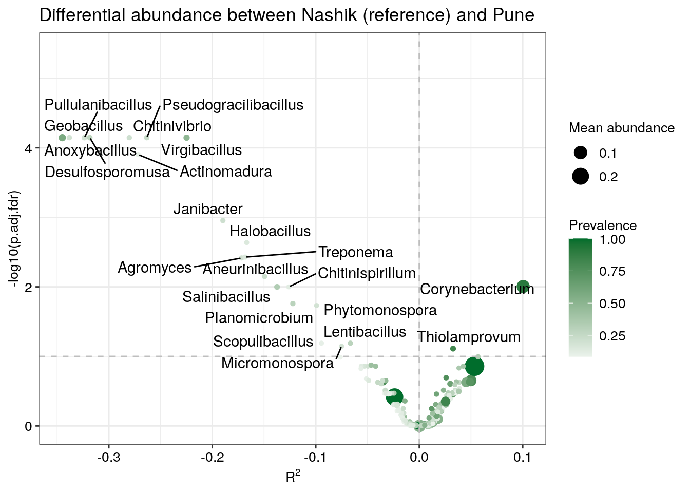

Chapter 11 Differential Abundance
11.1 Differential abundance analysis
This section provides an introduction to Differential Abundance Analysis (DAA), which is used to identify differences in the abundances of individual taxa (at any taxonomic level) between two or more groups, such as treatment and control. Here, we demonstrate its implementation on peerj13075, one of the mia datasets.
The goal of DAA is to identify biomarkers of a certain phenotype or condition, and gain understanding of a complex system by looking at its isolated components. For example, the identification of a bacterial taxon that is differentially abundant between healthy patients and diseased patients can lead to important insights into the pathophysiology of the disease. In other words, differentially abundant taxa can be involved in the dynamics of the disease, which in turn helps understand the system as a whole. Despite its relevance in current research, the DAA approach has also been subject to debate (Quinn, Gordon-Rodriguez, and Erb 2021).
11.1.1 Examples and tools
Due to the size and complexity of microbiome sequencing data, in this field DAA still faces several statistical challenges (Yang and Chen 2022). These include:
High variability. The abundance of a specific taxon could range over several orders of magnitude.
Zero-inflation. In a typical microbiome dataset, more than 70% of the values are zeros. Zeros could be due to either physical absence (structural zeros) or insufficient sampling effort (sampling zeros).
Compositionality. Increase or decrease in the (absolute) abundance of one taxon at the sampling site will lead to apparent changes in the relative abundances of other taxa in the sample.
As a consequence, the following approaches have been developed:
Over-dispersed count models has been proposed to address zero inflation, such as the negative binomial model used by edgeR (Y. Chen, Lun, and Smyth 2016) and DESeq2 (Love, Huber, and Anders 2014), the beta-binomial model used by corncorb (Martin, Witten, and Willis 2021).
Zero-inflated mixture models has aslo been proposed to address zero inflation, such as zero-inflated log-normal/normal mixture model used by metagenomeSeq (Paulson, Talukder, and Bravo 2017) and RAIDA (Sohn, Du, and An 2015), zero-inflated beta-binomial model used by ZIBB (T. Hu, Gallins, and Zhou 2018), and zero-inflated negative binomial model used by Omnibus (J. Chen et al. 2018).
Bayesian methods have been used to impute the zeros for methods working on proportion data, accounting for sampling variability and sequencing depth variation. Examples include ALDEx2 (Gloor, Macklaim, and Fernandes 2016) and eBay (Liu, Zhao, and Wang 2020).
Other methods use the pseudo-count approach to impute the zeros, such as MaAsLin2 (Mallick, Rahnavard, and McIver 2020) and ANCOMBC (Lin and Peddada 2020).
Different strategies have been used to address compositional effects, including:
Robust normalization. For example, trimmed mean of M-values (TMM) normalization used by edgeR, relative log expression (RLE) normalization used by DESeq2 (Love, Huber, and Anders 2014), cumulative sum scaling (CSS) normalization used by metagenomeSeq, centered log-ratio transformation (CLR) normalization used by ALDEx2 (Gloor, Macklaim, and Fernandes 2016) and geometric mean of pairwise ratios (GMPR) normalization used by Omnibus (J. Chen et al. 2018). Wrench normalization (Kumar et al. 2018) corrects the compositional bias by an empirical Bayes approach, which has been recommended in metagenomeSeq (Paulson, Talukder, and Bravo 2017) tutorial.
Reference taxa approach used by DACOMP (Brill, Amnon, and Ruth 2022) and RAIDA (Sohn, Du, and An 2015).
Analyzing the pattern of pairwise log ratios, such as ANCOM (Mandal et al. 2015).
Bias-correction used by ANCOMBC (Lin and Peddada 2020).
Some of the popular tools for differential abundance analysis include:
- ALDEx2 (Gloor, Macklaim, and Fernandes 2016)
- ANCOMBC (Lin and Peddada 2020)
- corncob (Martin, Witten, and Willis 2021)
- DESeq2 (Love, Huber, and Anders 2014)
- edgeR (Y. Chen, Lun, and Smyth 2016)
- lefser (Khleborodova 2021)
- MaAsLin2 (Mallick, Rahnavard, and McIver 2020)
- metagenomeSeq (Paulson, Talukder, and Bravo 2017)
- limma (Ritchie et al. 2015)
- LinDA (H. Zhou et al. 2022)
- ZicoSeq (Yang and Chen 2022)
- LDM (Y. Hu and Satten 2020)
- RAIDA (Sohn, Du, and An 2015)
- DACOMP (Brill, Amnon, and Ruth 2022)
- Omnibus (J. Chen et al. 2018)
- eBay (Liu, Zhao, and Wang 2020)
- ZINQ (Ling et al. 2021)
- ANCOM (Mandal et al. 2015)
- fastANCOM (C. Zhou et al. 2022)
- t-test
- Wilcoxon test
We recommend to have a look at Nearing et al. (2022) who compared all these methods across 38 different datasets. Because different methods use different approaches (parametric vs non-parametric, different normalization techiniques, assumptions etc.), the results may differ between methods, sometimes substantially as Nearing et al. (2022) pointed out. More recently Yang and Chen (2022) comprehensively evaluated these methods via a semi-parametric framework and 106 real datasets. Yang and Chen (2022) also concluded that different DA methods can sometimes produce discordant results, opening to the possibility for cherry-picking tools in favor of one’s own hypothesis. Therefore it is highly recommended to pick several methods to assess how robust and potentially reproducible your findings are with different methods.
In this section we demonstrate the use of four methods that can be recommended based on recent literature (ANCOM-BC (Lin and Peddada 2020), ALDEx2 (Gloor, Macklaim, and Fernandes 2016), Maaslin2 (Mallick, Rahnavard, and McIver 2020), LinDA (H. Zhou et al. 2022) and ZicoSeq (Yang and Chen 2022)).
The purpose of this section is to show how to perform DAA in R, not how to correctly do causal inference. Depending on your experimental setup and your theory, you must determine how to specify any model exactly. E.g., there might be confounding factors that might drive (the absence of) differences between the shown groups that we ignore here for simplicity. Or your dataset is repeated sampling design, matched-pair design or the general longitudianl design. We will demonstrate how to include covariates in those models. We picked a dataset that merely has microbial abundances in a TSE object as well as a grouping variable in the sample data. We simplify the examples by only including two of the three groups.
library(mia)
library(patchwork)
library(tidySummarizedExperiment)
library(knitr)
library(tidyverse)
library(ALDEx2)
library(Maaslin2)
library(MicrobiomeStat)
library(ANCOMBC)
library(GUniFrac)
# set random seed because some tools can randomly vary and then produce
# different results:
set.seed(13253)
# we use a demo dataset and restrict it to two geo locations
# for easy illustration
data(peerj13075)
tse0 <- peerj13075
tse0 <- tse0[ ,tse0$Geographical_location %in% c("Pune", "Nashik")]
# Let us make this a factor
tse0$Geographical_location <- factor(tse0$Geographical_location)
# how many observations do we have per group?
as.data.frame(colData(tse0)) %>%
count(Geographical_location) %>%
kable()| Geographical_location | n |
|---|---|
| Nashik | 11 |
| Pune | 36 |
11.1.2 Prevalence Filtering
Before we jump to our analyses, we may want to perform some data manipulation.
Let us here do aggregation to genus level, add relative abundance assay, and perform prevalence filtering.
tse <- agglomerateByRank(tse0, rank = "genus") %>%
transformCounts(assay.type = "counts",
method = "relabundance",
MARGIN = "samples") %>%
# subset based on the relative abundance assay
subsetByPrevalentTaxa(detection = 0,
prevalence = 10/100,
assay.type = "relabundance")
# Add also clr abundances
tse <- transformCounts(tse, method="clr", pseudocount=1) # not bale to runRegarding prevalence filtering, Nearing et al. (2022) found that applying a 10% threshold for the prevalence of the taxa generally resulted in more robust results. Some tools have builtin arguments for that. By applying the threshold to our input data, we can make sure it is applied for all tools.
11.1.3 ALDEx2
In this section, we will show how to perform a simple ALDEx2 analysis.
If you wanted to pick a single method, this method could be recommended to use.
According to the developers experience, it tends to identify the common
features identified by other methods. This statement is in line with a recent
independent evaluation by Nearing et al. (2022).
Please also have a look at the more extensive
vignette
that covers this flexible tool in more depth. ALDEx2 estimates technical
variation within each sample per taxon by utilizing the Dirichlet distribution.
It furthermore applies the centered-log-ratio transformation (or closely
related log-ratio transforms). Depending on the experimental setup, it will
perform a two sample Welch’s T-test and Wilcoxon-test or a one-way ANOVA and
Kruskal-Wallis-test. For more complex study designs, there is a possibility to
utilize the glm functionality within ALDEx2.
The Benjamini-Hochberg procedure is applied by default to correct for multiple testing. Below we show a simple example that illustrates the workflow.
# Generate Monte Carlo samples of the Dirichlet distribution for each sample.
# Convert each instance using the centered log-ratio transform.
# This is the input for all further analyses.
set.seed(254)
x <- aldex.clr(assay(tse), tse$Geographical_location) The t-test:
# calculates expected values of the Welch's t-test and Wilcoxon rank
# test on the data returned by aldex.clr
x_tt <- aldex.ttest(x, paired.test = FALSE, verbose = FALSE)Effect sizes:
# Determines the median clr abundance of the feature in all samples and in
# groups, the median difference between the two groups, the median variation
# within each group and the effect size, which is the median of the ratio
# of the between group difference and the larger of the variance within groups
x_effect <- aldex.effect(x, CI = TRUE, verbose = FALSE)
# combine all outputs
aldex_out <- data.frame(x_tt, x_effect)Now, we can create a so called Bland-Altman or MA plot (left). It shows the association between the relative abundance and the magnitude of the difference per sample. Next to that, we can also create a plot that shows the dispersion on the x-axis instead of log-ratio abundance. Red dots represent genera that are differentially abundant (\(q \leq 0.1\)) between the 2 groups. Black points are rare taxa and grey ones are abundant taxa. The dashed line represent an effect size of 1. See Gloor, Macklaim, and Fernandes (2016) to learn more about these plots.
par(mfrow = c(1, 2))
aldex.plot(
aldex_out,
type = "MA",
test = "welch",
xlab = "Log-ratio abundance",
ylab = "Difference",
cutoff = 0.05
)
aldex.plot(
aldex_out,
type = "MW",
test = "welch",
xlab = "Dispersion",
ylab = "Difference",
cutoff = 0.05
)
The evaluation as differential abundant in above plots is based on the corrected p-value. According to the ALDEx2 developers, the safest approach is to identify those features where the 95% CI of the effect size does not cross 0. As we can see in below table, this is not the case for any of the identified genera (see overlap column, which indicates the proportion of overlap). Also, the authors recommend to focus on effect sizes and CIs rather than interpreting the p-value. To keep the comparison simple, we will here use the p-value as decision criterion. But please be aware that the effect size together with the CI is a better answer to the question we are typically interested in (see also this article).
rownames_to_column(aldex_out, "genus") %>%
filter(wi.eBH <= 0.05) %>% # here we chose the wilcoxon output rather than tt
dplyr::select(genus, we.eBH, wi.eBH, effect, overlap) %>%
kable()| genus | we.eBH | wi.eBH | effect | overlap |
|---|---|---|---|---|
| Anaerococcus | 0.0540 | 0.0150 | 0.9595 | 0.1546 |
| Calditerricola | 0.0769 | 0.0299 | -0.7162 | 0.1702 |
| Chitinivibrio | 0.1216 | 0.0484 | -0.7700 | 0.1776 |
| Corynebacterium | 0.0280 | 0.0035 | 1.1857 | 0.1037 |
| Desulfosporomusa | 0.0851 | 0.0359 | -0.8604 | 0.1733 |
| Geobacillus | 0.0370 | 0.0081 | -1.0962 | 0.1293 |
| Jeotgalicoccus | 0.0276 | 0.0251 | -0.9052 | 0.1676 |
| Paenibacillus | 0.0837 | 0.0345 | -0.9380 | 0.1932 |
| Virgibacillus | 0.1103 | 0.0443 | -0.8750 | 0.1960 |
11.1.4 ANCOM-BC
The analysis of composition of microbiomes with bias correction (ANCOM-BC) (Lin and Peddada 2020) is a recently developed method for differential abundance testing. It is based on an earlier published approach (Mandal et al. 2015). The previous version of ANCOM was among the methods that produced the most consistent results and is probably a conservative approach (Nearing et al. 2022). However, the new ANCOM-BC method operates quite differently compared to the former ANCOM method.
As the only method, ANCOM-BC incorporates the so called sampling fraction into the model. The latter term could be empirically estimated by the ratio of the library size to the microbial load. According to the authors, variations in this sampling fraction would bias differential abundance analyses if ignored. Furthermore, this method provides p-values and confidence intervals for each taxon. It also controls the FDR and it is computationally simple to implement.
Note that the original method was implemented in the ancombc() function (see
extended tutorial).
The method has since then been updated and new features have been added to enable
multi-group comparisons and repeated measurements among other improvements.
We do not cover the more advanced features of ANCOMBC in this tutorial
as these features are documented in detail in this
tutorial.
We now proceed with a simple example. First, we specify a formula. In this formula, other covariates could potentially be included to adjust for confounding. We show this further below. Again, please make sure to check the function documentation as well as the linked tutorials to learn about the additional arguments that we specify.
# Agglomerate data to genus level and add this new abundance table to the altExp slot
altExp(tse, "genus") <- agglomerateByRank(tse, "genus")
# Identify prevalent genera
prevalent.genera <- getPrevalentFeatures(altExp(tse, "genus"), detection = 0, prevalence = 30/100)
# Run ANCOM-BC at the genus level and only including the prevalent genera
out <- ancombc2(
data = altExp(tse, "genus")[prevalent.genera, ],
assay_name = "counts",
fix_formula = "Geographical_location",
p_adj_method = "fdr",
prv_cut = 0,
group = "Geographical_location",
struc_zero = TRUE,
neg_lb = TRUE,
global = TRUE # multi group comparison will be deactivated automatically
)# store the FDR adjusted results [test on v2.0.3]
ancombc_result <- cbind.data.frame(taxid = out$res$taxon,
ancombc = as.vector(out$res$q_Geographical_locationPune))# store the FDR adjusted results [test on v1.2.2]
ancombc_result <- out$res %>% dplyr::select(starts_with(c("taxon", "lfc", "q")))The object out contains all model output. Again, see the
documentation of the
function
under Value for details. Our question whether taxa are
differentially abundant can be answered by looking at the res
object, which contains dataframes with the coefficients, standard
errors, p-values and q-values. Below we show the first entries of this
dataframe.
kable(head(ancombc_result))| taxon | lfc_(Intercept) | lfc_Geographical_locationPune | q_(Intercept) | q_Geographical_locationPune |
|---|---|---|---|---|
| Abyssicoccus | 0.0904 | 0.1619 | 0.7617 | 0.6060 |
| Acidaminococcus | 0.2093 | -0.2665 | 0.7148 | 0.6066 |
| Acinetobacter | 1.5838 | -1.6285 | 0.0861 | 0.0725 |
| Actinomyces | 0.2896 | -0.3084 | 0.6344 | 0.5269 |
| Aerococcus | -0.2045 | 0.6671 | 0.5381 | 0.0366 |
| Aeromonas | -0.3480 | 0.6383 | 0.5110 | 0.1952 |
11.1.5 MaAsLin2
Let us next illustrate MaAsLin2 (Mallick, Rahnavard, and McIver 2020). This method is based on generalized linear models and flexible for different study designs and covariate structures. For details, check their Biobakery tutorial.
# maaslin expects features as columns and samples as rows
# for both the abundance table as well as metadata
# We can specify different GLMs/normalizations/transforms.
# Let us use similar settings as in Nearing et al. (2021):
maaslin2_out <- Maaslin2(
t(assay(tse)),
data.frame(colData(tse)),
output = "DAA example",
transform = "AST",
fixed_effects = "Geographical_location",
# random_effects = c(...), # you can also fit MLM by specifying random effects
# specifying a ref is especially important if you have more than 2 levels
reference = "Geographical_location,Pune",
normalization = "TSS",
standardize = FALSE,
min_prevalence = 0 # prev filterin already done
)Which genera are identified as differentially abundant? (leave out “head” to see all).
kable(head(filter(maaslin2_out$results, qval <= 0.05)))| feature | metadata | value | coef | stderr | pval | name | qval | N | N.not.zero |
|---|---|---|---|---|---|---|---|---|---|
| Fructobacillus | Geographical_location | Nashik | 0.0080 | 0.0011 | 0 | Geographical_locationNashik | 0 | 47 | 9 |
| Desulfosporomusa | Geographical_location | Nashik | 0.0373 | 0.0059 | 0 | Geographical_locationNashik | 0 | 47 | 13 |
| Geobacillus | Geographical_location | Nashik | 0.1294 | 0.0207 | 0 | Geographical_locationNashik | 0 | 47 | 27 |
| Pullulanibacillus | Geographical_location | Nashik | 0.0395 | 0.0062 | 0 | Geographical_locationNashik | 0 | 47 | 9 |
| Chitinivibrio | Geographical_location | Nashik | 0.0274 | 0.0045 | 0 | Geographical_locationNashik | 0 | 47 | 10 |
| Thermoanaerobacter | Geographical_location | Nashik | 0.0089 | 0.0015 | 0 | Geographical_locationNashik | 0 | 47 | 10 |
This will create a folder that is called like in the output specified above. It contains also figures to visualize difference between significant taxa.
11.1.6 LinDA
Lastly, we cover linear models for differential abundance analysis of microbiome compositional data (H. Zhou et al. (2022)). This is very similar to ANCOMBC with few differences: 1) LinDA correct for the compositional bias differently using the mode of all regression coefficients. 2) it is faster (100x-1000x than ANCOMBC and according to the authors); 3) it supports hierarchical models. The latest ANCOMBC versions are also supporting hierarchical models. Nevertheless, LinDA seems a promising tool that achieves a very good power/fdr trade-off together with ANCOMBC according to the review. The speed improvements might make it critical especially for datasets that have higher sample or feature set sizes.
meta <- as.data.frame(colData(tse)) %>% dplyr::select(Geographical_location)
linda.res <- linda(
as.data.frame(assay(tse)),
meta,
formula = '~Geographical_location',
alpha = 0.05,
prev.filter = 0,
mean.abund.filter = 0)## 0 features are filtered!
## The filtered data has 47 samples and 262 features will be tested!
## Pseudo-count approach is used.
## Fit linear models ...
## Completed.linda_out <- linda.res$output$Geographical_locationPune# to scan the table for genera where H0 could be rejected:
kable(head(filter(as.data.frame(linda_out), reject)))| baseMean | log2FoldChange | lfcSE | stat | pvalue | padj | reject | df | |
|---|---|---|---|---|---|---|---|---|
| Acidaminococcus | 1194.7 | -1.9084 | 0.3579 | -5.332 | 0.0000 | 0.0000 | TRUE | 45 |
| Aciditerrimonas | 393.5 | -0.6655 | 0.2184 | -3.048 | 0.0039 | 0.0165 | TRUE | 45 |
| Actinomadura | 836.9 | -1.7985 | 0.3596 | -5.001 | 0.0000 | 0.0001 | TRUE | 45 |
| Agromyces | 938.1 | -1.7530 | 0.3910 | -4.483 | 0.0001 | 0.0004 | TRUE | 45 |
| Aminivibrio | 416.9 | -0.7489 | 0.2352 | -3.185 | 0.0026 | 0.0128 | TRUE | 45 |
| Amycolatopsis | 556.1 | -0.9299 | 0.3320 | -2.801 | 0.0075 | 0.0302 | TRUE | 45 |
11.1.7 ZicoSeq
Subsequently, we add a linear model and permutation-based method, see details at tutorial.
This approach has been assessed to exhibit high power and a low false discovery rate, which has the following components:
Winsorization to decrease the influence of outliers;
Posterior sampling based on a beta mixture prior to address sampling variability and zero inflation;
Reference-based multiple-stage normalization to address compositional effects;
set.seed(123)
meta <- as.data.frame(colData(tse))
zicoseq.obj <- GUniFrac::ZicoSeq(meta.dat = meta,
feature.dat = as.matrix(assay(tse)),
grp.name = 'Geographical_location',
adj.name = NULL,
feature.dat.type = 'count',
prev.filter = 0,
perm.no = 999,
mean.abund.filter = 0,
max.abund.filter = 0,
return.feature.dat = T)## 0 features are filtered!
## The data has 47 samples and 262 features will be tested!
## On average, 1 outlier counts will be replaced for each feature!
## Fitting beta mixture ...
## Finding the references ...
## Permutation testing ...
## ...................................................................................................
## ...................................................................................................
## ...................................................................................................
## ...................................................................................................
## ...................................................................................................
## ...................................................................................................
## Completed!zicoseq_out <- cbind.data.frame(p.raw=zicoseq.obj$p.raw, p.adj.fdr=zicoseq.obj$p.adj.fdr) kable(head(filter(zicoseq_out, p.adj.fdr<0.05)))| p.raw | p.adj.fdr | |
|---|---|---|
| Actinomadura | 0.001 | 0.0001 |
| Agromyces | 0.001 | 0.0038 |
| Aneurinibacillus | 0.001 | 0.0071 |
| Anoxybacillus | 0.001 | 0.0001 |
| Chitinispirillum | 0.001 | 0.0100 |
| Chitinivibrio | 0.001 | 0.0001 |
## x-axis is the effect size: R2 * direction of coefficient
ZicoSeq.plot(ZicoSeq.obj = zicoseq.obj,
meta.dat = meta,
pvalue.type ='p.adj.fdr')
11.1.8 Comparison of methods
The different methods yield somewhat different results but they could be also expected to overlap to a substantial degree. As an exercirse, you can compare the outcomes between the different methods in terms of effect sizes, significances, or other aspects that are comparable between the methods.
11.2 Confounding variables
Confounders are common in experimental research. In general, these can be classified into 3 types:
Biological confounder, such as age, sex, etc.
Technical confounder that caused by data collection, storage, DNA extraction, sequencing process, etc.
Confounder caused by experimental models, such as cage effect, sample background, etc.
Adjusting confounder is necessary and important to reach a valid conclusion. To perform causal inference, it is crucial that the method is able to include covariates in the model. This is not possible with e.g. the Wilcoxon test. Other methods such as DESeq2, edgeR, ANCOMBC, LDM, Aldex2, Corncob, MaAsLin2, ZicoSeq, fastANCOM and ZINQ allow this. Below we show how to include a confounder/covariate in ANCOMBC, LinDA and ZicoSeq.
11.2.1 ANCOMBC
# perform the analysis
ancombc_cov <- ancombc2(
data = tse,
assay_name = "counts",
tax_level = "genus",
fix_formula = "Geographical_location + Age",
p_adj_method = "fdr",
lib_cut = 0,
group = "Geographical_location",
struc_zero = TRUE,
neg_lb = TRUE,
alpha = 0.05,
global = TRUE # multi group comparison will be deactivated automatically
)
# now the model answers the question: holding Age constant, are
# bacterial taxa differentially abundant? Or, if that is of interest,
# holding phenotype constant, is Age associated with bacterial abundance?
# Again we only show the first 6 entries.tab <- ancombc_cov$res %>% dplyr::select(starts_with(c("taxon", "lfc", "q")))
kable(head(tab))| taxon | lfc_(Intercept) | lfc_Geographical_locationPune | lfc_AgeElderly | lfc_AgeMiddle_age | q_(Intercept) | q_Geographical_locationPune | q_AgeElderly | q_AgeMiddle_age |
|---|---|---|---|---|---|---|---|---|
| Abyssicoccus | 0.0723 | 0.0319 | 0.3264 | 0.2208 | 0.7456 | 0.9763 | 0.7328 | 1.0000 |
| Acidaminococcus | 0.2364 | 0.0584 | -0.6752 | -0.3702 | 0.6251 | 0.9721 | 0.4517 | 0.9279 |
| Acinetobacter | 1.5023 | -3.2362 | 2.2397 | 2.1993 | 0.0833 | 0.0013 | 0.1015 | 0.0639 |
| Actinomyces | 0.3740 | 0.0866 | -0.7335 | -0.6522 | 0.3437 | 0.9439 | 0.4352 | 0.7294 |
| Actinoplanes | 0.9135 | -1.1217 | -0.1497 | 0.0000 | 0.0020 | 0.0461 | 0.8662 | 1.0000 |
| Aerococcus | -0.2178 | 0.6432 | 0.0922 | 0.0864 | 0.3378 | 0.1375 | 0.8662 | 1.0000 |
11.2.2 LinDA
linda_cov <- linda(
as.data.frame(assay(tse, "counts")),
as.data.frame(colData(tse)),
formula = '~ Geographical_location + Age',
alpha = 0.05,
prev.filter = 0,
mean.abund.filter = 0)## 0 features are filtered!
## The filtered data has 47 samples and 262 features will be tested!
## Pseudo-count approach is used.
## Fit linear models ...
## Completed.linda.res <- linda_cov$output$Geographical_locationPunekable(head(filter(linda.res, reject==T)))| baseMean | log2FoldChange | lfcSE | stat | pvalue | padj | reject | df | |
|---|---|---|---|---|---|---|---|---|
| Acidaminococcus | 1140.5 | -1.438 | 0.4390 | -3.276 | 0.0021 | 0.0182 | TRUE | 43 |
| Actinomadura | 804.7 | -1.520 | 0.4477 | -3.394 | 0.0015 | 0.0139 | TRUE | 43 |
| Anaerococcus | 939.0 | 6.795 | 1.3978 | 4.861 | 0.0000 | 0.0004 | TRUE | 43 |
| Aneurinibacillus | 988.0 | -1.687 | 0.5426 | -3.110 | 0.0033 | 0.0256 | TRUE | 43 |
| Anoxybacillus | 1712.8 | -2.727 | 0.5574 | -4.893 | 0.0000 | 0.0004 | TRUE | 43 |
| Brachybacterium | 403.0 | 2.060 | 0.7303 | 2.821 | 0.0072 | 0.0450 | TRUE | 43 |
11.2.3 ZicoSeq
set.seed(123)
zicoseq.obj <- GUniFrac::ZicoSeq(meta.dat = as.data.frame(colData(tse)) ,
feature.dat = as.matrix(assay(tse)),
grp.name = 'Geographical_location',
adj.name = 'Gender',
feature.dat.type = 'count',
prev.filter = 0,
perm.no = 999,
mean.abund.filter = 0,
max.abund.filter = 0,
return.feature.dat = T)## 0 features are filtered!
## The data has 47 samples and 262 features will be tested!
## On average, 1 outlier counts will be replaced for each feature!
## Fitting beta mixture ...
## Finding the references ...
## Permutation testing ...
## ...................................................................................................
## ...................................................................................................
## ...................................................................................................
## ...................................................................................................
## ...................................................................................................
## ...................................................................................................
## Completed!zicoseq_out <- cbind.data.frame(p.raw=zicoseq.obj$p.raw,
p.adj.fdr=zicoseq.obj$p.adj.fdr) kable(head(filter(zicoseq_out, p.adj.fdr<0.05)))| p.raw | p.adj.fdr | |
|---|---|---|
| Actinomadura | 0.001 | 0.0004 |
| Agromyces | 0.001 | 0.0030 |
| Aneurinibacillus | 0.001 | 0.0036 |
| Anoxybacillus | 0.001 | 0.0001 |
| Chitinispirillum | 0.001 | 0.0089 |
| Chitinivibrio | 0.001 | 0.0001 |